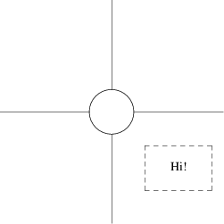
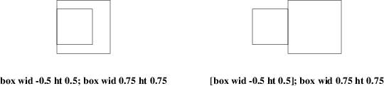

There are two different ways to group objects in pic; brace grouping and block composites.
The simpler method is simply to group a set of objects within curly bracket or brace characters. On exit from this grouping, the current position and direction are restored to their value when the opening brace was encountered.
A block composite object is created a series of commands enclosed by square brackets. The composite can be treated for most purposes like a single closed object, with the size and shape of its bounding box. Here is an example. The program fragment
A: [
circle;
line up 1 at last circle .n;
line down 1 at last circle .s;
line right 1 at last circle .e;
line left 1 at last circle .w;
box dashed with .nw at last circle .se + (0.2, -0.2);
Caption: center of last box;
]
yields the block in figure 11-1, which we show both with and without its attachment points. The block’s location becomes the value of A.

Figure 11-1: A sample composite object
To refer to one of the composite’s attachment points, you can say (for example) A .s. For purposes of object naming, composites are a class. You could write last [] .s as an equivalent reference, usable anywhere a location is needed. This construction is very important for putting together large, multi-part diagrams.
Blocks are also a variable-scoping mechanism, like a groff(1) environment. All variable assignments done inside a block are undone at the end of it. To get at values within a block, write a name of the block followed by a dot, followed by the label you want. For example, we could refer the the center of the box in the above composite as last [] .Caption or A.Caption.
This kind of reference to a label can be used in any way any other location can be. For example, if we added "Hi!" at A.Caption the result would look like this:

Figure 11-2: Adding a caption using interior labeling
You can also use interior labels in either part of a with modifier. This means that the example composite could be placed relative to its caption box by a command containing with A.Caption at.
Note that both width and height of the block composite object are always positive:

Figure 11-3: Composite block objects always have positive width and height
Blocks may be nested. This means you can use block attachment points to build up complex diagrams hierarchically, from the inside out. Note that last and the other sequential naming mechanisms don’t look inside blocks, so if you have a program that looks like
.PS
P: [box "foo"; ellipse "bar"];
Q: [
[box "baz"; ellipse "quxx"]
"random text";
]
arrow from 2nd last [];
.PE
the arrow in the last line is attached to object P, not object Q.
In DWB pic, only references one level deep into enclosed blocks were permitted. GNU gpic removes this restriction.
The combination of block variable scoping, assignability of labels and the macro facility that we’ll describe later on can be used to simulate functions with local variables (just wrap the macro body in block braces).